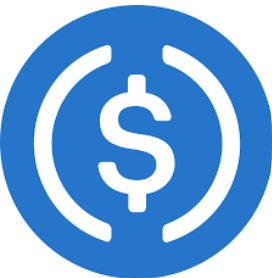
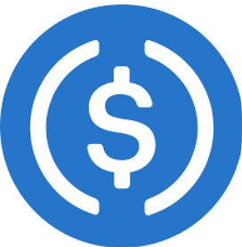

De wereld van crypto biedt een schat aan mogelijkheden, maar het vraagt tijd, kennis en een strategische aanpak om er succesvol in te zijn. Als crypto-investeerder heb ik de afgelopen jaren niet alleen een sterke portefeuille opgebouwd, maar ook waardevolle ervaring opgedaan in het beheren en te laten groeien van investeringen.
Steeds vaker hoor ik van mensen dat ze interesse hebben om ook in crypto te stappen, maar dat het hen ontbreekt aan tijd om de markt te volgen of kennis op te doen om zo met vertrouwen beslissingen te nemen. Daarom wil ik via The Crypto Collective een oplossing bieden.
Ik bied je de kans om eenvoudig te investeren in crypto door een deel van mijn portefeuille te kopen. Dit betekent dat je meeprofiteert van de groei en winst die ik realiseer, zonder zelf de complexe en tijdrovende stappen te hoeven nemen.
Wil je weten wat de mogelijkheden zijn? Bekijk de tabel voor de beschikbare inlegopties, termijnen en de verwachte opbrengsten. Heb je daarna nog vragen of wil je meer informatie? Stuur me gerust een berichtje!
Hoe de Cryptomarkt Werkt
De cryptomarkt is een digitale handelsplaats waar cryptocurrencies zoals Bitcoin en Ethereum worden verhandeld. Deze valuta’s bestaan alleen in de digitale wereld en gebruiken een technologie genaamd blockchain, die zorgt voor veilige en transparante transacties zonder de tussenkomst van banken of overheden. Door de blockchain-technologie worden de transacties gedecentraliseerd uitgevoerd, wat betekent dat er geen enkele autoriteit is die controle heeft over de munten. Hierdoor kunnen mensen wereldwijd met elkaar handelen zonder tussenkomst van bijvoorbeeld een bank.
De waarde van cryptocurrencies wordt voornamelijk bepaald door vraag en aanbod, vergelijkbaar met hoe aandelen op de beurs worden verhandeld. Als er veel vraag is naar een bepaalde cryptocurrency, kan de waarde stijgen, en als er minder vraag is, kan de waarde dalen. Dit zorgt ervoor dat de markt erg volatiel is – de prijzen kunnen snel en drastisch schommelen. Dit biedt kansen voor winst, maar brengt ook risico’s met zich mee, omdat niemand precies kan voorspellen hoe de markt zich zal gedragen. Voor sommige mensen is de crypto-markt een spannend en innovatief avontuur, terwijl anderen het als te risicovol beschouwen.
In essentie biedt de cryptomarkt mogelijkheden om geld te verdienen door te speculeren op stijgende of dalende prijzen van digitale valuta. Het vereist echter kennis, geduld en een goed begrip van de risico’s. Alleen met een goede strategie en een goed begrip van de markt kun je hierin mogelijk succesvol zijn.
 
